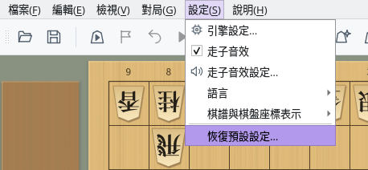
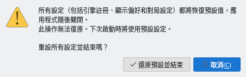

恢復預設設定與設定檔案
介紹將所有設定恢復為預設值的方法，以及設定的儲存位置
截圖於 Linux 上以繁體中文介面擷取。
恢復預設設定
從「設定」選單可一次將包括引擎註冊在內的所有設定恢復為預設值
開啟選單列的「設定」，選擇最下方的「恢復預設設定…」。選單面板的「設定」分頁中也有相同的按鈕。
只有在沒有進行對局（包括網路對局）、棋譜分析、研究、詰棋搜尋或局面編輯時才能選擇此項目。進行這些操作時，此項目會顯示為灰色，無法選擇。


「設定」選單：「恢復預設設定…」位於最下方
會開啟「重設設定」確認對話方塊。按一下「還原預設並結束」，即可將設定恢復為預設值並結束 ShogiBoardQ。此操作無法復原。
按一下「取消」或按 Esc 鍵，將不做任何變更並關閉確認對話方塊。為防止誤操作，開啟確認對話方塊時預先選取的是「取消」。


「重設設定」確認對話方塊
與一般結束相同，如果有未儲存的棋譜或定跡，會詢問是否儲存。如果在此取消結束，設定不會被重設。
設定檔案的內容會在所有視窗關閉後清除，因此結束時儲存的視窗大小和位置也不會保留。ShogiBoardQ 不會自動重新啟動，請再次啟動。啟動後將使用與第一次啟動時相同的預設設定。
如果無法寫入設定檔案，會顯示「重設設定失敗」並列出設定檔案的位置。請檢查儲存位置的寫入權限和可用磁碟空間。
會恢復預設的設定與保留的資料
只清除設定檔案的內容。棋譜等檔案和詰棋練習的嘗試歷史會保留
| 項目 | 重設後 | 說明 |
|---|---|---|
| 引擎註冊與選項 | 恢復預設 | 已註冊的引擎清單和各引擎的選項會被清除。引擎本身的檔案不會被刪除，重新註冊引擎即可使用。 |
| 對局、分析等對話方塊的設定 | 恢復預設 | 用時規則、對局者名稱、棋譜自動儲存位置、上次選擇的引擎等 |
| 外觀、字型與走子音效 | 恢復預設 | 棋子、棋盤、背景，應用程式字型、文字大小，走子音效的開關和音量等 |
| 介面語言與棋譜表示 | 恢復預設 | 介面語言恢復為「跟隨系統設定」，「棋譜與棋盤座標表示」恢復為「跟隨介面語言」 |
| 視窗與停駐面板 | 恢復預設 | 視窗和對話方塊的大小與位置、停駐面板的配置、儲存的停駐版面配置，以及選單的我的最愛 |
| 最近使用的檔案 | 恢復預設 | 定跡檔案和局面集的歷史記錄、上次開啟的資料夾、所選的詰棋題集等 |
| 儲存的棋譜、定跡、局面集等檔案 | 保留 | 自己儲存的檔案不會被刪除 |
| 詰棋練習的嘗試歷史 | 保留 | 儲存在與設定檔案分開的資料庫中（參見儲存位置） |
| 快取 | 保留 | 暫時儲存的走子音效音訊和詰棋判定結果，需要時會重新產生 |
如果只想恢復部分設定，請在對應的畫面中變更。例如，「走子音效設定…」和對局對話方塊中都有「恢復預設值」按鈕。
設定檔案的儲存位置
設定儲存在各作業系統固定資料夾中的 ShogiBoardQ.ini 裡
| 作業系統 | 設定檔案 |
|---|---|
| Windows | C:\Users\<使用者名稱>\AppData\Local\ShogiBoardQ\ShogiBoardQ.ini |
| macOS | ~/Library/Preferences/ShogiBoardQ/ShogiBoardQ.ini |
| Linux | ~/.config/ShogiBoardQ/ShogiBoardQ.ini（設定了環境變數 XDG_CONFIG_HOME 時為 $XDG_CONFIG_HOME/ShogiBoardQ/ShogiBoardQ.ini） |
~ 表示家目錄（macOS 為 /Users/<使用者名稱>，Linux 為 /home/<使用者名稱>）。設定依使用者儲存在此位置，而不是儲存在解壓縮發行套件（ZIP）的資料夾或 AppImage 內部，因此換成新版本或移動應用程式資料夾後，設定仍會保留。
- Windows：在檔案總管的網址列中輸入
%LOCALAPPDATA%\ShogiBoardQ並按 Enter 鍵。 - macOS：在 Finder 中選擇「前往」→「前往檔案夾…」，輸入
~/Library/Preferences/ShogiBoardQ。「資料庫」檔案夾通常是隱藏的。 - Linux：在檔案管理員的位址列中輸入
~/.config/ShogiBoardQ。.config是隱藏資料夾。
備份設定時，請先結束 ShogiBoardQ，再複製 ShogiBoardQ.ini。還原時，也請在 ShogiBoardQ 未執行時將檔案放回原位置。在 ShogiBoardQ 執行期間對檔案所做的變更，可能會被結束時儲存的設定覆寫。
如果因 ShogiBoardQ 無法啟動等原因不能從選單重設，請在 ShogiBoardQ 未執行時刪除 ShogiBoardQ.ini 或變更其名稱。下次啟動時將使用預設設定。
| 作業系統 | 詰棋練習的嘗試歷史 | 快取 |
|---|---|---|
| Windows | %APPDATA%\ShogiBoardQ | %LOCALAPPDATA%\ShogiBoardQ\cache |
| macOS | ~/Library/Application Support/ShogiBoardQ | ~/Library/Caches/ShogiBoardQ |
| Linux | ~/.local/share/ShogiBoardQ | ~/.cache/ShogiBoardQ |
嘗試歷史儲存在 tsume_progress.sqlite 中。「恢復預設設定…」不會刪除它，如果也想清除歷史，請結束 ShogiBoardQ 後刪除此檔案。快取資料夾也可以刪除，需要時會重新產生。
Windows 的 %APPDATA% 為 C:\Users\<使用者名稱>\AppData\Roaming，%LOCALAPPDATA% 為 C:\Users\<使用者名稱>\AppData\Local。在 Linux 上，如果設定了環境變數 XDG_DATA_HOME 或 XDG_CACHE_HOME，則使用其下的 ShogiBoardQ 資料夾。